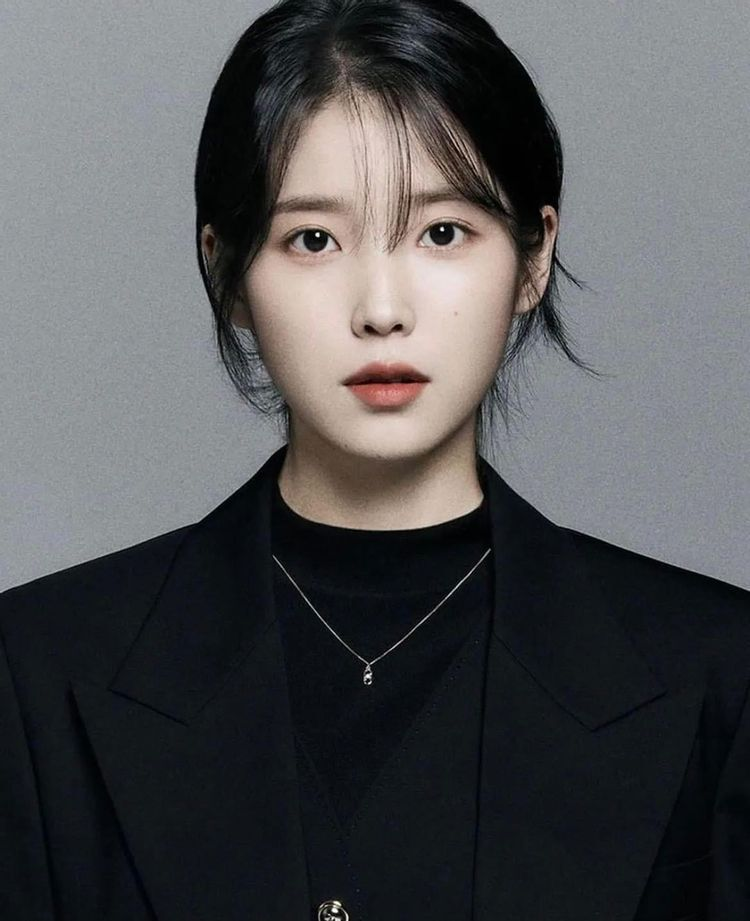

아이유 | IU
2022. 12. 10 작성
다수의 메가 히트곡을 보유하며 대중음악계에 큰 영향력을 끼치고 있다. 단적으로 데뷔 3년 차였던 2010년부터 발매한 모든 노래들이 각종 음원차트 최상위권에 랭크되었을 만큼 사실상 대중적으로 흥행에 실패한 적이 없다. 10대 시절부터 도전한 다양한 장르의 음악들 중에는 <잔소리>와 <좋은 날>, <너랑 나>처럼 가창력과 소녀스러움을 함께 선보인 곡들이 대중에게 특히 어필되며 국민 여동생이라는 칭호와 함께 대중음악계에 신드롬을 일으켰다. 20대 초반에는 자작곡 <금요일에 만나요>, 세대를 초월하여 폭넓은 리스너층을 확보한 <너의 의미>가 수록된 리메이크 앨범 꽃갈피, 그리고 본격적으로 프로듀싱을 하기 시작한 앨범 CHAT-SHIRE 등을 기점으로 자신만의 음악을 하는 아티스트로 전향하는 데에 성공했는데, 이는 십수 년째 국민적 인기와 영향력을 이어가는 롱런의 기반이 되었다고 평가된다. 그 후 앨범 프로듀싱과 거의 모든 곡의 작사를 자신이 직접 하면서 <레옹>, <밤편지>, <팔레트>, <삐삐>, <에잇>, <라일락> 등 발매하는 곡들마다 히트곡으로 만들어내며 싱어송라이터로서도 승승장구하고 있다.
또한 매년 벚꽃이 필 때쯤 역주행을 하는 <봄 사랑 벚꽃 말고>와 매년 크리스마스 시즌마다 역주행을 하며 국내 대표 캐럴로 자리잡은 <미리 메리 크리스마스>까지, 매년 시즌마다 찾아 듣는 이른바 연금송을 2곡이나 보유하고 있다. 이렇게 트렌드가 급변하는 가요계에서 십수 년 동안 굳건히 최정상의 자리를 지키며 사랑받고 있으며, 이 과정들 속에서 다양한 장르를 소화해내는 역량이 입증되었다는 평가도 받는다.
써클차트(前 가온차트) 집계 이래 대한민국 가수 중 그룹과 솔로를 모두 포함하여 음원 누적 스트리밍 및 다운로드 1위라는 영예를 보유하고 있다. 이러한 성과의 바탕에는 2010년 이후 발매한 음원 중 대중적으로 히트에 실패한 타이틀 곡이나 선공개 곡, 디지털 싱글이 단 한 곡도 없다는 점뿐만 아니라, 앨범의 높은 완성도로 인해 앨범이 발매되면 수록곡 전곡을 들어보는 대중층이 탄탄하기 때문에 수록곡 전체가 차트 최상위권에 랭크되며 사랑받는다는 점이 있다. 심지어 OST나 다른 가수의 곡에 피처링한 곡들도 최상위권에 랭크되며, 이들 중에는 웬만한 타이틀 곡과 비슷할 정도로 흥행에 성공한 곡들이 있을 정도다.